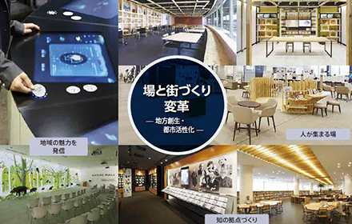

- 「働き方の変革」「学び方の変革」「場と街づくり変革」の実現に向けて
-

働き方の変革
1989年より「知的生産性研究所」にて、オフィスワーカーの知的生産性向上に関する調査・研究に取り組み、大手企業や官公庁・自治体のお客さま向けに、生産性が向上するオフィスづくりや、それを支援するＩＴシステム構築に取り組んでいます。
-

学び方の変革
1998年より「内田洋行 教育総合研究所」にて、省庁から学校現場まで幅広く協同で教育研究を進め、小中高大を中心にアクティブ・ラーニングを実現するこれからの新しい教育環境づくりに取り組んでいます。
-

場と街づくり変革
地域の企業、自治体・大学・図書館等の公共施設による人が集まる場の空間の設計・デザイン、そして、それをバックエンドで支えるICT環境を整備し、地域活性化を支援していきます。
- 内田洋行グループの事業構造

- 売上高
- 144,537百万円 2017年7月期
- 公共
- 公共関連事業分野 52,399百万円
- 情報
- 情報関連事業分野 45,013百万円
- オフィス
- オフィス関連事業分野 47,506百万円
- 環境構築関連事業・その他
-
・民間市場（企業、印刷、海外）
- オフィス家具
-

- オフィス環境の構築
- デジタルフィニッシャー クラフト（海外）
-
・文教・公共市場（学校、印刷、海外）
- 教育機関
- 学校施設設備
- 官公自治体・公共施設
- ICT関連事業
-
・大手民間市場（上場、グローバル企業等）
- コミュニケーションインフラの構築
- ソフトウェアライセンスの提供・マネジメント
-
・文教市場（教育委員会･小中高大）
- 教育ICT
- 大学ICT
-
・中堅中小市場（食品･物流･建設等業種別）
- 業種別ERPパッケージ
- システムインテグレーションサービス
-
・官公自治体市場（省庁･自治体･図書館･福祉）
- 基幹系業務サービス
- 住民情報サービス
-

- 福祉業務サービス
- 図書館ICT
- それぞれの変革を支援するために
-
大学ICT
大学・専門学校向けに、学内ネットワーク・PC教室・CALL教室等の情報インフラ、主体的で深い学びの実現を支援するアクティブ・ラーニング環境、学生サービス向上に寄与する証明書発行システムやソフトウェアライセンスの学割提供(U365）、セキュリティ強化、運用管理業務の受託等、ICTとデザインの観点から運用まで含めた教育環境を総合的にインテグレーションします。
-
公共施設
大学、地域の住民の方が利用し易く、職員の方が働きやすい環境により、多くの人が繋がり、より快適なサービスを受けられる、そして良いサービスを提供できる官公庁・自治体・大学・図書館などの公共施設の空間設計・構築を提供します。また、ミーティングエリアやリフレッシュエリアなどで人が集まる場に国産材を用いた空間デザインの構築も提供します。
-
中央省庁向けICTソリューション･施設
LAN環境の無線化・ペーパレスの実現・テレビ会議システムの導入・テレワークの実施等の各種ICTソリューションの提供・構築から、固定席の廃止（フリーアドレス）等の空間レイアウトの変更まで、国が進める「働き方改革」についての各種ソリューションや、「人づくり革命」推進のための「学び方変革」
-
自治体/福祉向けICTソリューション
「行政事務の効率化」「電子自治体の実現」「地方創生」「マイナンバー対応」等、地方公共団体が抱える行政課題に対し、情報ネットワークシステムの設計・構築から、住基・税・福祉および行政内部事務といった業務システムの構築・運用サポートまで地方公共団体の「業務改革・働き方の変革」「住民サービスの向上」の支援を行っています。
-

図書館ICT分野
ティブ・ラーニングの活用の場として注目されて います。図書館の利用者や職員の方々に、働き方変革を支援するICタグを活用した自動貸出機や蔵書点検等のICTソリューションや、地元国産材を活用した学習空間、情報発信や展示システム等、オリジナルで付加価値の高いICTシステムを提供します。
-
「働き方」変革コンサルティングサービス
生産性が高く躍動的な働き方を実現するためには、ICTやワークスペースといった働く人を支える支援環境の整備と同時に、ワーカーの行動や意識の変革が必須となります。内田洋行は、社内研究機関である知的生産性研究所が持つノウハウをもとに、働き方変革を支援する「ChangeWorking®」コンサルティング・サービスを提供しています。独自の方法論と数多くのプロジェクトで磨かれた実践知によるコンサルティング・サービスは、社員の行動変革を起点とした働き方変革の実現を支援します。
-
コミュニケーション・コラボレーションビジネス
働き方変革を進めることで、ワークライフバランスや労働コスト削減等の効果が期待されます。この実現のために、会議の効率を高めるクラウド型会議室運用システム「SmartRooms」やコラボレーション基盤システム「SmartAmigo」、さまざまな利用シーンにおけるテレワークの実現に向け、多拠点で利用する電子ボード「SMART Board」や情報共有ツール「ClickShare」「wivia」等のソリューション＆プロダクツを導入するためのコンサルティングやシステム構築を提供します。
-
ITインフラサービス
いつでも、どこでも、誰とでも、安全かつ快適にコミュニケーションできるI Tインフラを提供します。さまざまな利用シーンにおけるセキュリティ対策を行い、社内でもWi-Fiネットワーク・IPVoice・Web会議システムとも相互に接続できる統合的なIT環境の提供や運用を支援します。
-
ソフトウェアの購買・更新支援
ウチダスペクトラムでは、ソフトウェア調達における企画設計から販売、運用支援までサポートしています。大手企業向けライセンスの販売に特化した専門スタッフによる購買支援や、WEB調達支援システムやレポーティングサービスによる調達支援で業務効率化を支援。また、米国Insight社と連携した購買オペレーションも提供しており、グローバル契約統合の運用もサポートしています。
-
ソフトウェア資産管理
コンプライアンスやITガバナンスの一環であるソフトウェア資産管理の国際標準ISO/IEC 19770-1への対応、グローバルなベストプラクティスであるIT資産管理（IAITAM）のIBPLに則ったツールを活用したサービスを提供し、IT資産の可視化とソフトウェアライセンスのコスト最適化を支援します。